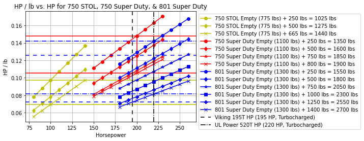

| 750 STOL | 750 Super Duty | 801 Super Duty | |
|---|---|---|---|
| Seats | 2 | 3 | 4 |
| Wing Span | 29ft 10in | 33ft 5in | 35ft 4in |
| Empty Weight | 775lbs | 1100lbs | 1300lbs |
| Empty Weight w/out Estimated Engine Weight | 575lbs | 800lbs | |
| Empty Weight w/out Estimated Engine Weight + Viking Weight | 795lbs | 1060lbs | |
| Design Gross Weight | 1440lbs | 1900lbs | 2700lbs |
| Useful Load | 665lbs | 800lbs | 1400lbs |
| Useful Load w/ Amphib. Floats | 465lbs | 480lbs | 880lbs* |
| Cabin Width | 42in | 42in | 44in |
| Cabin Width (bubble doors) | 50in | 50in | 52in |
| Design HP | 80 - 140 HP Typical: 100 - 130 HP |
150 - 230 HP Typical: 180 - 200 HP |
180 - 240 HP Typical: 195 - 220 HP |
| Power to Weight (Empty Weight + 250 lbs)* |
0.078 - 0.137 HP/lb Typical: 0.098 - 0.129 HP/lb |
0.111 - 0.170 HP/lb Typical: 0.133 - 0.148 HP/lb |
0.116 - 0.155 HP/lb Typical: 0.126 - 0.142 HP/lb |
"Overpowering an existing aircraft is the easiest way to achieve short take-off performance (with enough power anything will take-off in a short distance!), but this requires a lot of fuel for acceptable endurance, and is an expensive, heavy, and inefficient way to obtain STOL performance, and does not provide good slow flight or payload due to the heavier engine weight and/or fuel load requirement. My experience tells me that I need 60 to 100 hp for a two-seat aircraft, or 150 to 200 hp for a four-seater capable of carrying 1,000 lbs."
STOL operations almost always make for bad fuel economy. Slow speeds combined (with small variance between low and high STOL cruise speeds) with the need for high enough power for STOL operations makes STOL inherently bad for NM per gallon. While I've studied and focused on NM per gallon as the main criteria for high performance cross country aircraft, for STOL operations the main concern will be GPH and thus cost per hour. More power is easy to want, but harder to afford.


"The adjustable front seats fold forward for easy access to the rear seats / cargo area. With anticipated applications for special mission use, the rear seat area can be converted for cargo use (including 50 gallon drums), or the cabin can be reconfigured for a berth (patient on a stretcher) across the front and back right-hand seats, with the pilot in the front left seat and a doctor or nurse in the rear left seat."